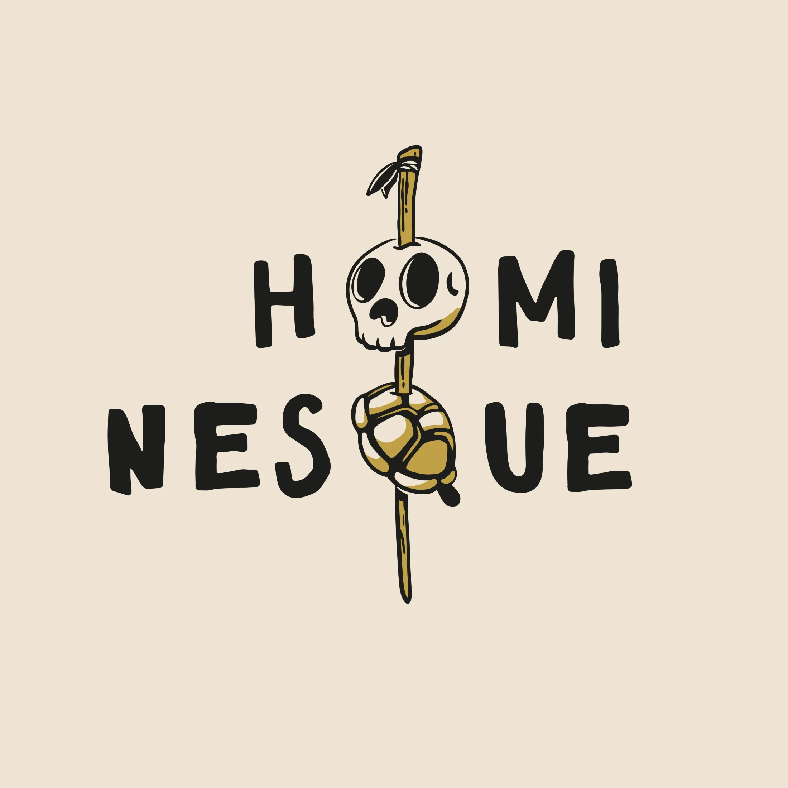

Having a visual identity for a research project strengthens its visibility, coherence, and impact, both among institutional partners and the general public. It helps ensure consistent recognition across various contexts (publications, presentations, social media, exhibitions) and contributes to the project's long-term visibility and credibility.
These visual identities were created for research projects in archaeology and prehistory.
My process involves capturing the core themes and values of each project and translating them into coherent, versatile logos. The aim is to ensure strong visual consistency across publications, outreach materials, and institutional communication.